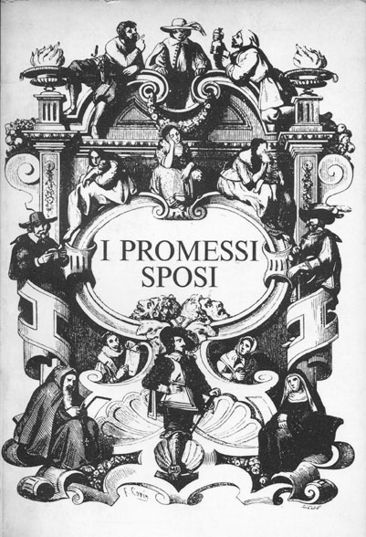

I PROMESSI SPOSI:OGGI

Scene:
1. Titoli di testa e presentazione del narratore
2. Matrimonio Renzo e Lucia
3. Don Abbondio e i bravi
4. Don Abbondio e Perpetua
5. Lucia, Agnese e don Abbondio
6. Colloquio Lucia e frà Cristoforo
7. Fuga dal paese di Lucia, Renzo e Agnese
8. Arrivo in città: Lucia si reca al convento da suor Gertrude, Renzo deve recarsi dal cugino Bartolomeo
9. Renzo e la rivolta degli studenti
10. Renzo in fuga raggiunge un cugino
11. Don Rodrigo commissiona all’Innominato il rapimento
12. Rapimento di Lucia
13. Liberazione di Lucia
14. Renzo e Lucia di nuovo insieme
Scena I: 22 aprile 2017, chiesa
Inquadratura:interni ed esterni, panoramica sacerdote, invitati, sposo e testimoni
Protagonisti: Lucia, Renzo, testimoni (Tonio e Gervaso), Agnese, Perpetua, Don Abbondio, Innominato, bravi e invitati